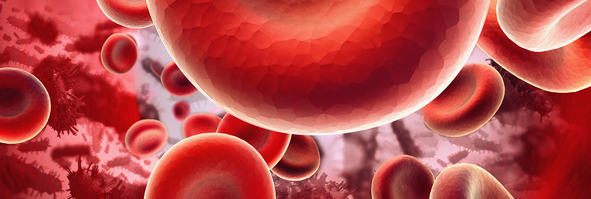

Scienze anestesiologiche
Elenco degli esami ematochimici e accertamenti diagnostici preoperatori Per interventi di chirurgia oculistica ed oftalmoplastica “ambulatoriali” quali:
Vengono richiesti i seguenti esami ematochimici ed accertamenti diagnostici:
Per interventi di chirurgia oculistica ed oftalmoplastica “Ambulatoriali/Day Surgery” quali:
Vengono richiesti i seguenti esami ematochimici ed accertamenti diagnostici:
Gli interventi vengono tutti eseguiti in presenza dell’Anestesista con le seguenti tecniche:
L’Anestesista valuterà in fase preoperatoria la tecnica ideale in base alla tipologia d’intervento e alle esigenze del paziente. Attività del reparto di Scienze Anestesiologiche Visita anestesiologica preoperatoria: La visita anestesiologica preoperatoria consente all’Anestesista di inquadrare il paziente nella sua complessità clinica, quantificarne il rischio operatorio e prepararlo nel miglior modo possibile all’intervento stesso. Assistenza intraoperatoria: La presenza dell’Anestesista assicura tecniche di sedazione ormai indispensabili per rendere più confortevole l’intervento. Assistenza postoperatoria: L’Anestesista, dopo l’intervento, si occupa della sorveglianza (insieme all’infermiere) e della dimissione del paziente, che avviene di concerto con lo specialista Oculista; in questa fase avviene anche la gestione del dolore postoperatorio. Inoltre vengono consegnate le istruzioni per l’assunzione di eventuali farmaci che si rendano necessari e le norme di comportamento da Personalizzazione del trattamento anticoagulante: I pazienti in trattamento anticoagulante o antiaggregante che debbono essere sottoposti ad intervento chirurgico, vengono trattati con protocolli di sostituzione della terapia secondo le linee guida emanate dalla Società Italiana Anestesia Rianimazione Terapia Intensiva (SIAARTI); la terapia viene personalizzata dall’Anestesista in base alla tipologia d’intervento e alle condizioni cliniche del paziente; di norma la sospensione e la sostituzione avvengono dai 7 ai 5 giorni prima dell’intervento. Trattamento del dolore lombare: Per la cura ed il trattamento delle protrusioni e delle ernie discali con particolare sintomatologia dolorosa vengono eseguiti i blocchi antalgici peridurali; il trattamento completo consta di quattro procedure effettuate: a tempo zero, dopo una settimana dalla prima, dopo quindici giorni dalla seconda e dopo un mese dalla terza. Il trattamento può essere sospeso dopo le prime due procedure in caso di scarsa risposta allo stesso. L’Anestesista valuterà in fase di visita preliminare gli accertamenti diagnostici ed ematochimici da effettuare, per cui è necessario fissare un appuntamento con la segreteria per poter effettuare una visita preliminare. Lo studio della colonna con Risonanza Magnetica è fondamentale per accedere a tale trattamento. Cateterismo venoso centrale con posizionamento periferico per presidi a medio – lungo termine: Questa tecnica permette di inserire un cateterino in una vena centrale accedendo perifericamente, di solito da una vena del braccio, sotto controllo ecografico. Il cateterino può rimanere in sito per un periodo di tempo piuttosto lungo e permette la somministrazione di farmaci, infusioni e chemioterapici senza sottoporre il paziente ad una procedura di incannulamento venoso ogni volta che necessita. In alcuni casi la procedura può essere effettuata anche a domicilio del paziente. L’Anestesista valuterà in fase di visita preliminare gli accertamenti diagnostici ed ematochimici da effettuare, per cui è necessario fissare un appuntamento con la segreteria per poter effettuare una visita preliminare. Didattica/Formazione Il reparto di Scienze Anestesiologiche partecipa e collabora all’attività didattica e al progetto di formazione continua promosso dallo studio Gamma Medica, organizzando corsi di approfondimento, workshop e gruppi di studio. |

Trattamento del dolore lombareTrattamento anticoagulanteCateterismo venoso centrale Visite postoperatorie Visite preoperatorie
Visite preoperatorie
Visite preoperatorie